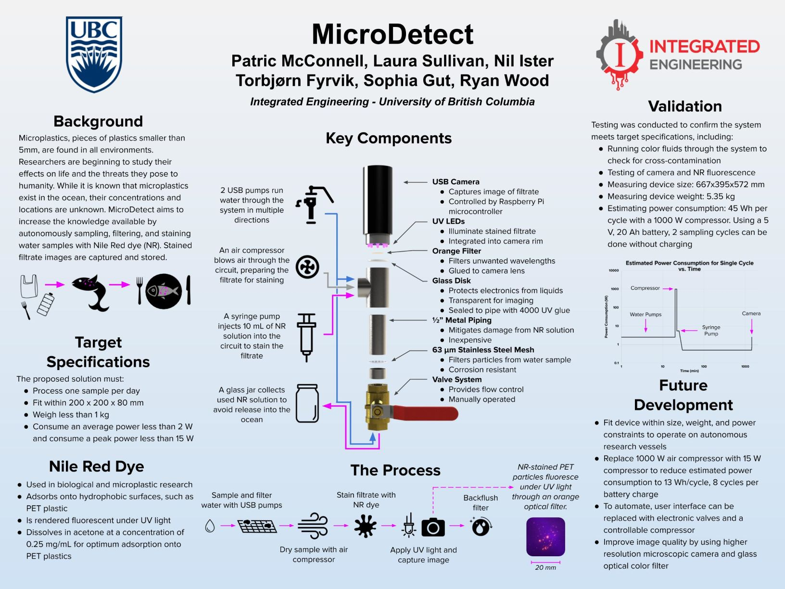
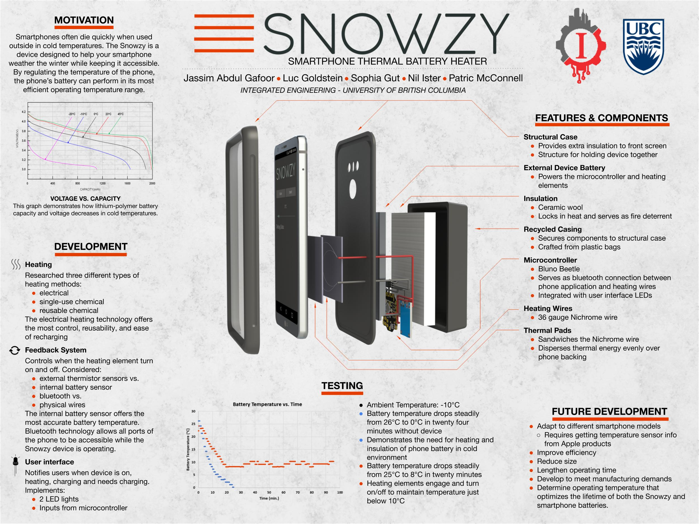

Engineer with 4+ years of industry experience in semiconductor R&D and solid-state battery manufacturing. I'm passionate about developing innovative solutions for a more sustainable future—from metrology systems that enable clean energy technology to exploring how AI can transform engineering workflows. Currently focused on integrating advanced measurement systems into high-volume battery production at QuantumScape.
· Integrate metrology systems into automated production tools for high-volume manufacturing of solid-state battery components
· Collaborate with external vendors to develop and optimize measurement solutions for critical process parameters
· Define system specifications for new metrology equipment and modify existing systems to meet evolving production requirements
· Transitioned to metrology engineering role, developing expertise in Measurement System Analysis (MSA) and statistical process control
· Designed and implemented metrology tools for critical ceramic separator and cathode measurements in solid-state battery production
· Applied advanced statistical methods to ensure measurement accuracy, repeatability, and reliability across production systems
· Led Design of Experiments (DOE) for intermediate scale-up efforts from 0.3kg to 3kg of product per week while maintaining quality control
· Aligned across teams for root cause analysis of major production failure mode by developing process genealogy queries to synthesize data and support decision-making
· Served as tool owner, organizing preventative maintenance, training new users, and troubleshooting issues for critical production equipment
· Supported QS0 pilot line activities through Design of Experiments, measurements, process design, and review of downstream impacts
· Supporting root-cause-and-effect chain investigations on eutectic wafer-level bonding of inertial micro-electro mechanical systems (MEMS) sensors
· Performing various experiments to assist with development of inertial MEMS
· Preparing wafers for experiments in clean room environment
· Conducting characterization of wafers post-experiment
. Designed, coded, and tested Graphic User Interface for experimental image analysis
· Assisted in managing aspects of a series of projects ranging in value
· Supported monitoring of project progress and performance indicators to ensure the work is staying within budget and within schedule
· Connected with multi-disciplinary staff of engineers, consultants, estimators, cost controllers, First Nations representatives, land owners and property representatives, government representatives, clients, and other stakeholders
· Reviewed project deliverables to ensure their accuracy, consistency and quality
· Assisted with review of technical documents, writing and checking project design reports, and completing design overview assessment
· Created a material procurement calculator in Excel to ensure the correct purchase of materials for transmission line projects
· Served as a liaison between faculty members, students, and Jump Start staff to support the implementation of active and engaging learning environments
· Prepared, organized, and managed evening and weekend co-curricular programming with groups of 20-500 Jump Start attendees and supervisors
· Adhered to residence life protocols, responded to safety and security issues, defused situations and resolved issues
· Developed and supported community engagement of incoming UBC students
· Utilized computer-aided design to rapidly familiarize and better understand various system’s roles and interactions within 737 planes
· Implemented computer-aided design to model factory spaces to improve work flow
· Analyzed and undertook tooling organization and inventory to increase efficiency
· Optimized the manufacturing process by examining and providing recommendations for continuous improvement
· Studied industry standards and regulations as they applied to the P8 program
Controls, User Interface, Software
Sensor networks provide critical data for power grid safety. They are expensive and dangerous to install. My team and I developed a drone system to mount and remove sensors from high power transmission lines. Our proof-of-concept has the potential to increase safety and reduce costs.
Technical Documentation, Dye Technology Development
Working collaboratively with my peers, I created a prototype to autonomously sample water, filter solids from the sample, and capture photographs highlighting microplastic contamination. These photos can then be used to help researchers determine the concentration of microplastics in marine water more efficiently.
Communication Lead
Tired of our phones dying while we were having fun in the great outdoors during winter - my peers and I developed a smartphone case to regulate our phone's battery temperature.
GPA: 4.00
I love spending time outdoors—skiing, rock climbing, road biking, and hiking (Mt. Whitney was a highlight!). When I'm not outside, you'll probably find me in the kitchen testing out new recipes. Ask me about my favorite way to eat tomatoes!
I'm also fascinated by nature's clever systems, like the underground fungal networks that allow trees to communicate and support each other.